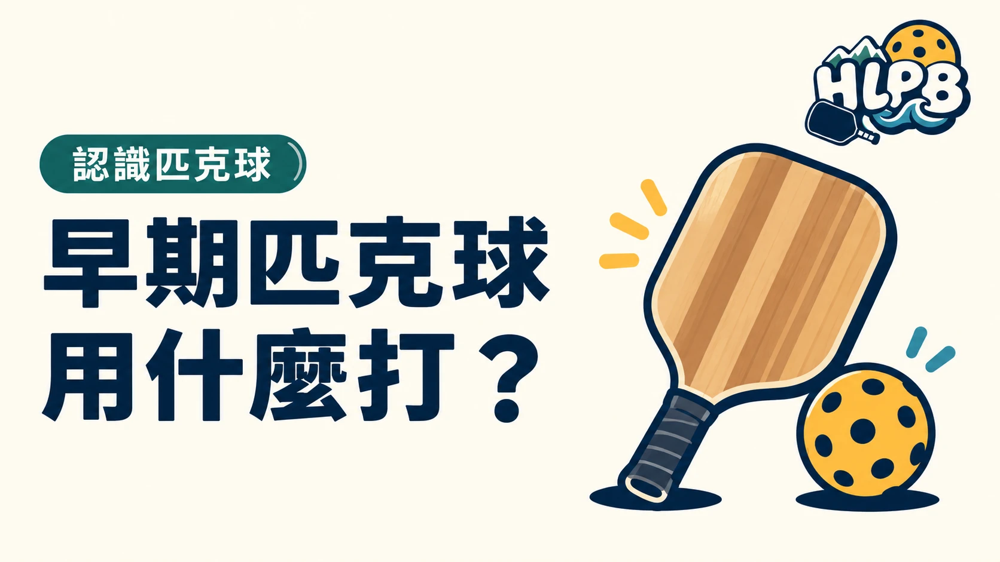

匹克球早期使用過桌球拍與有孔塑膠球，並不是一開始就有現在的專用球拍。USA Pickleball 的歷史介紹記錄了這段從手邊器材開始調整玩法的過程。
早期器材與今天的閱讀重點
| 史料提及的器材 | 應如何理解 |
|---|---|
| 桌球拍 | 初期曾使用的手邊器材 |
| 有孔塑膠球 | 這項遊戲早期的用球元素 |
| 調整高度的羽球網 | 初期場地安排的一部分 |
這些資料描述起源，不是現代器材選購規格。不能把曾經使用桌球拍，推論成現在任何球拍都適合參賽；也不能用早期網高代替現行球場的正式標準。
為什麼這段歷史值得知道？
它讓人看見運動玩法與專用器材並非同時一步到位。閱讀器材故事時，把發明經過、後來的發展與現在的標準分開，才不會把一個有趣的起源敘述當成現行規定。
今天選拍，應回到哪些資訊？
HLPB 建議看目前商品的拍面、內芯、厚度、重量、握柄與售後資訊；準備比賽時，另核對適用的認證清單。器材源自哪一種早期工具，不能取代這些具體選購資料。
本篇是歷史入口，不作品牌優劣排名，也不以早期材料推論今天球拍的效能。
延伸閱讀：匹克球從哪裡來？1965 年的家庭遊戲起點、匹克球拍怎麼選？材質和厚度只是起點。
資料來源：USA Pickleball 基本介紹與歷史。
內容更新：2026-10-20｜資料來源：USA Pickleball 官方資料
返回文章列表